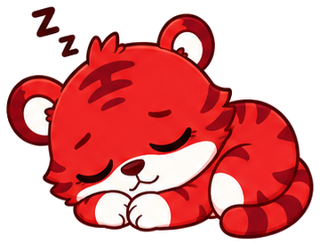
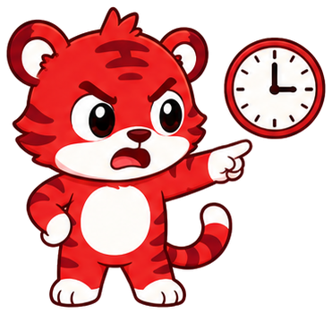

Fera
Design system · v1 · “Vira fera até o dia da prova.”
Vermelho = positivo. Erro é sempre laranja.
Sombra sólida 4px, nunca com blur.
Borda 2px no lugar de sombra difusa.
Toque ≥ 48px, margem 20px, grid de 8.
Cores
Vermelho Fera#E8322B · CTAs, ativo, progresso
Vermelho profundo#B8201A · sombra sólida
Vermelho suave#FFE8E5 · chips, selecionado
Texto em vermelho#C4261F · texto sobre #FFE8E5 (AA)
Streak / fogo#FF6B1A → #E8322B
Acerto#2BB673 / #E6F7EE · texto #17804F
Erro#FF8A00 / #FFF1E0 · texto #A65300
Branco#FFFFFF · base das telas
Off-white quente#FFF8F6 · seções, cards
Bordas#F0E6E4 · divisórias, trilho
Texto principal#2A1F1F · nunca preto puro
Texto secundário#756A69 · ajuste AA do #8A7F7E
Ícone inativo#8A7F7E · tab bar, fechar
Bloqueado#E3D6D3 · sombra de itens futuros
Tipografia
Fredoka 700 · 48+45 XP · 1.240
Fredoka 700 · 32Missão completa!
Fredoka 600 · 28 · telaQual sua próxima prova?
Nunito 800 · 20 · cardTirar foto do caderno
Nunito 600 · 16 · corpoVocê manda o conteúdo. Eu transformo em missões de 5 minutos.
Nunito 700 · 13 · legendaRanking até a prova · seg, 28 set
Nunito 800 · 18 · botãoBora!
Botões
Primário
Primário · pressionado (afunda 4px)
Secundário
Desabilitado
Acerto
Erro
Sobre vermelho (modo véspera)
Cards, chips e progresso
x = 6padrão
x = 3selecionado
x = 3certo
x = 9errado
Matemática
Português
ESCOLHA A CERTA
12
1.240XP
5
Bolhas da trilha: feita · atual (pulsa) · futura
Navegação e ícones
Expressões do Rugi
Força
splash, padrão

Acenando
boas-vindas, trilha

Comemorando
acerto

Pensativo
pergunta, erro, IA

Triste
streak perdida

Dormindo
sumiu há dias

Impaciente
lembrete, push

Troféu
fim de missão

Pegando fogo
streak, véspera